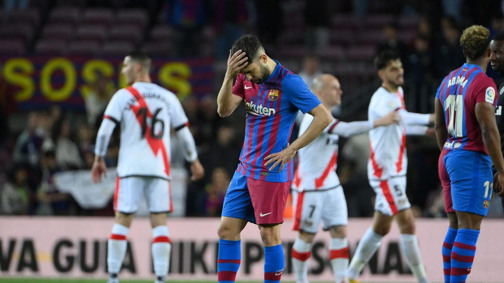

|
|
Краткая история ФК БарселоныФутбольный клуб «Барелона» был основан швейцарским спортсменом Гансом Гампером. В конце XIX века футбол в Испании был непопулярным видом спорта, а Гампер хотел создать свою команду. Первые игроки были собраны благодаря объявлению в газете. На него откликнулось одиннадцать человек разных национальностей (в основном это были англичане и испанцы). Датой основания официально считается 1899 год. Вскоре клуб становится самым популярным в Испании, успешно выступает на Чемпионате Каталонии. В 1902 году «Барселона» завоевывает свой первый кубок Макайя.  | ||